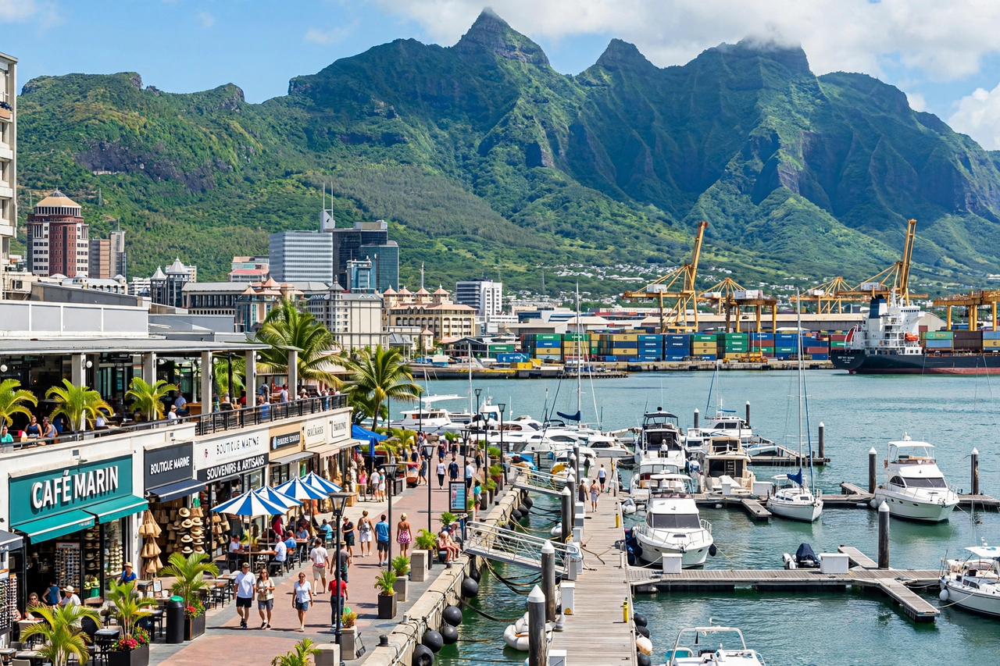

Wikipedia — the free encyclopedia
| Country | Mauritius |
| Status | Capital and largest city |
| Founded | 1735 |
| Population | About 150,000 (estimate) |

Port Louis is the capital and largest city of Mauritius, on the island's northwest coast. The Dutch first used its sheltered harbour in the 17th century, but the city was founded under the French in 1735 by Bertrand-François Mahé de La Bourdonnais, who made it the administrative centre and a key port of call on the route to India; it is named for King Louis XV.
Under British rule from 1810 the port grew with the sugar trade. Aapravasi Ghat, where hundreds of thousands of indentured labourers from India first landed after 1834, is now a UNESCO World Heritage Site, as is nearby Le Morne.
Port Louis remains the country's main port and financial centre. The Caudan Waterfront, the central market, the Champ de Mars racecourse (one of the oldest in the southern hemisphere) and the Blue Penny Museum — home to rare Mauritian 'Post Office' stamps — are among its landmarks. The city is known for its hot climate and for the ring of peaks, including Pieter Both, that frame it.